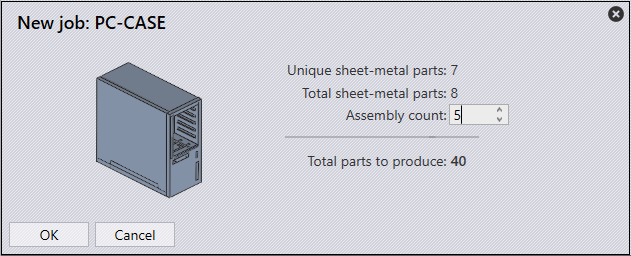

To produce an assembly :
● Select the assembly from the assembly tree. Praxis displays the assembly parts with their repetition counts in the parts pane.
● Use new job command to bring the job dialog.
● Adjust the Assembly Count and press OK.
